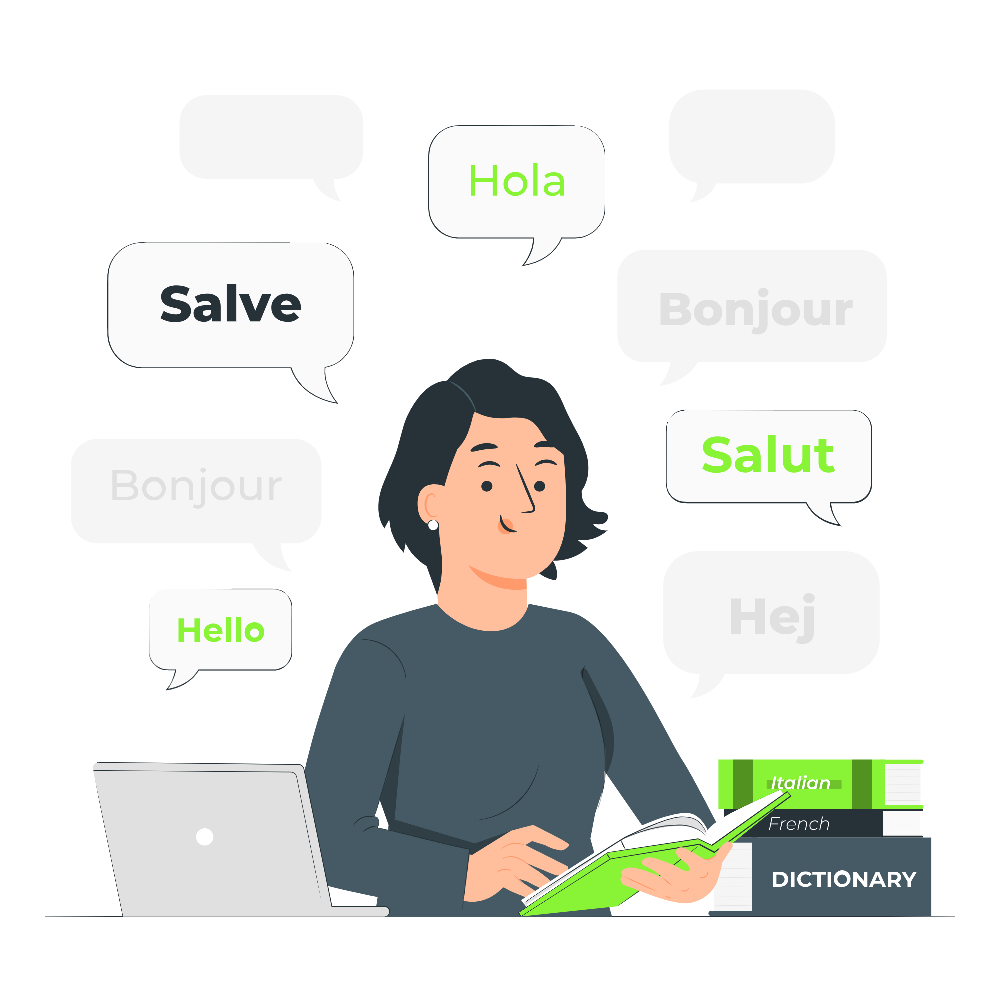

Convert Text to Braille
Enter your text below to see its Braille representation.
Your Braille output will appear here...
Enter your text below to see its Braille representation.
Your Braille output will appear here...